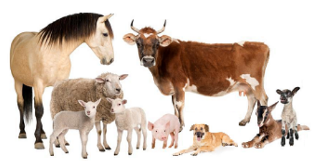
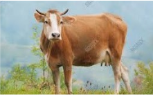
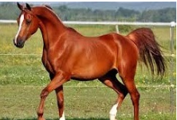
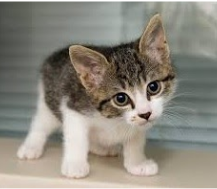

index<--
Nime Challenge

Notes:
Names of animals, persons or plants are starting with uppercase. Most names for animals are equal or longer than 4 characters.
Dictionary:
Names of animals, persons or plants are starting with uppercase. Most names for animals are equal or longer than 4 characters.
Animals
- nime de agra = farm animals
- nime de kasa = domestic animals
- sajo-nime = wild animals
- tamo-nime = domestic animals
- agro-nime = farm animals
|  | Vaka = cow |  | Cava = horse |
| Koika = dog |  | Mytsa = cat |
Challenge 1:
Translate:- Where can I see some animals?
- You can see domestic animals near home;
- You must go to the zoo to see wild animals;
Dictionary:
- ud = where
- vivo = alive
- Orsa = bear
- zola = zoo
- vhzu = to see
- nime = animals
- ud posu ea sh vhzu algo nime;
- ta posu sh vhzu tamo-nime naxo de kasa;
- ta dovu sh andu la zoda sh vhzu savo-nime;
Challenge 2:
Translate:- Can I see a monkey?
- How about some horses?
- Monka = monkey
- Cave = horses
- bo = but
- posu-ea sh vhzu una Monka?
- vi bo algo Cave?
Challenge 3:
Translate:- Can you run faster than a bear who follows you?
- I can not, but I will have to run faster than you.
- Orsa = bear
- posu-tsa = can you
- fogu = run
- cnelo = fast
- cnelh = faster
- do = than
- ormu = follow
- posu-ta sh fogu cnelh ca una Orsa do ta ormu?
- ea no posu; bo ma va dovu sh fogu cnelh do ta.
Read next: Index